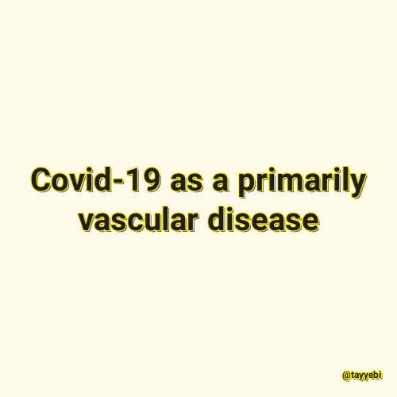

✖
محتوای غیر رسمی
اجازه رسمی پیوند به این پست توسط ساریاب دریافت نشده است؛ و یا نویسنده عضو رسمی بلاگر های آزاد ساریاب نیست.

Covid-19 as a primarily vascular disease
@tayyebi
2021-05-11 19:36:00
مطالعه پست
گزارش خرابی لینک / محتوای مجرمانه / تغییر محتویات لینک